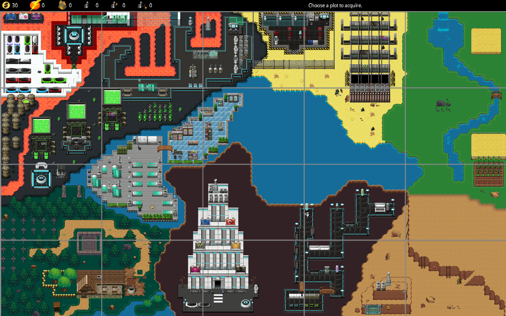
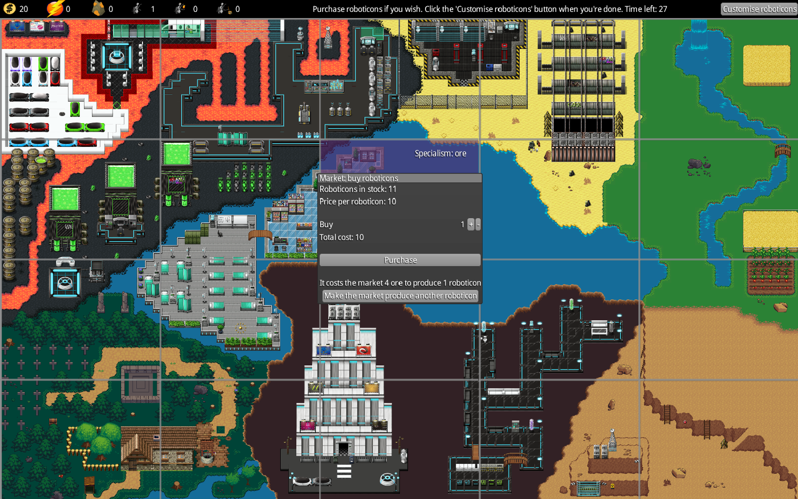
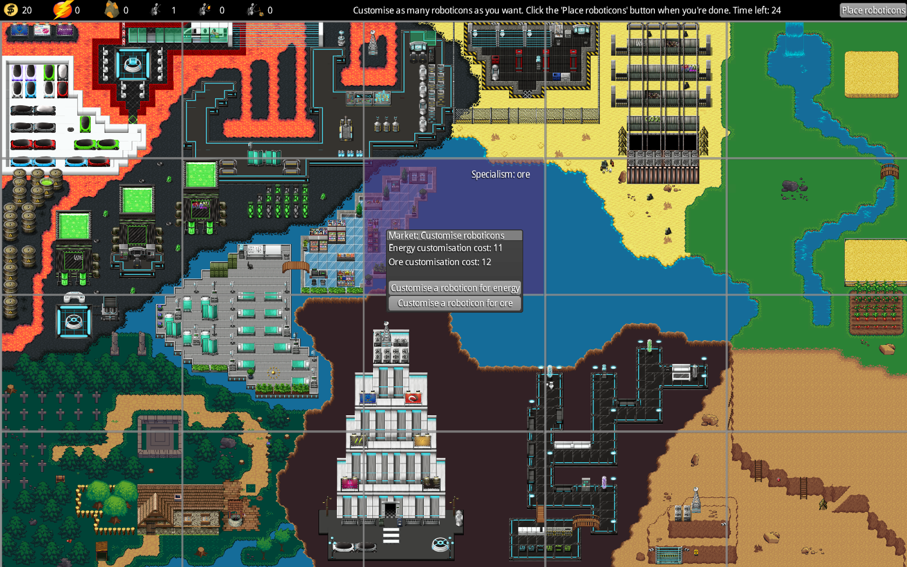
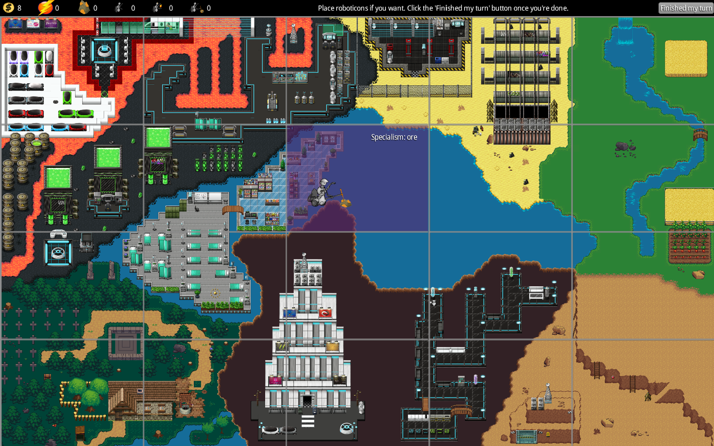
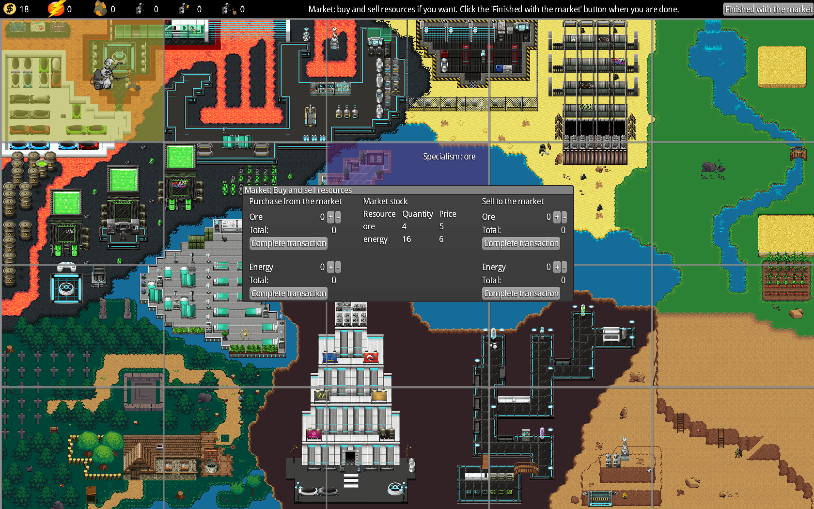
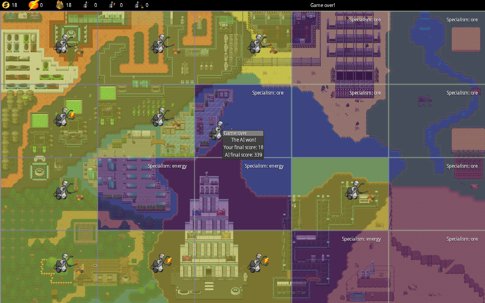

The java docs files that will help you understand our code can be found here
User Guide
The game is broken down into two main phases. In the first phase players take their turns one after another, while the second phase both players access the market simultaneously. ai or player go first

Step 1. The player selects an unoccupied plot of land from the map.

Step 2. The player is then prompted with the market, allowing them to purchase roboticons or attempt to make the market produce more roboticons.

Step 3. The player is then prompted with roboticon customisation screen. This allows players to turn their uncustomised roboticons into a customised roboticon for a fee.
Step 4. The player is then allowed to place a customised roboticon on a tile they own by clicking on it and selecting which type of customised roboticon they wish to place.

Step 5. The player can then idicate it is the end of their turn by clicking the 'Finished my turn' button located in the upper right of the screen.

Step 6. The player can now sell their resources just produced by their roboticons or they may buy some needed resources from the market if they wish.
Step 7. The round is now over and the player now repeats the previous steps.

Step 8. Once there are no unoccupied plots left it is game over. The players scores are totaled and a window presents the final scores along with who the winner is.